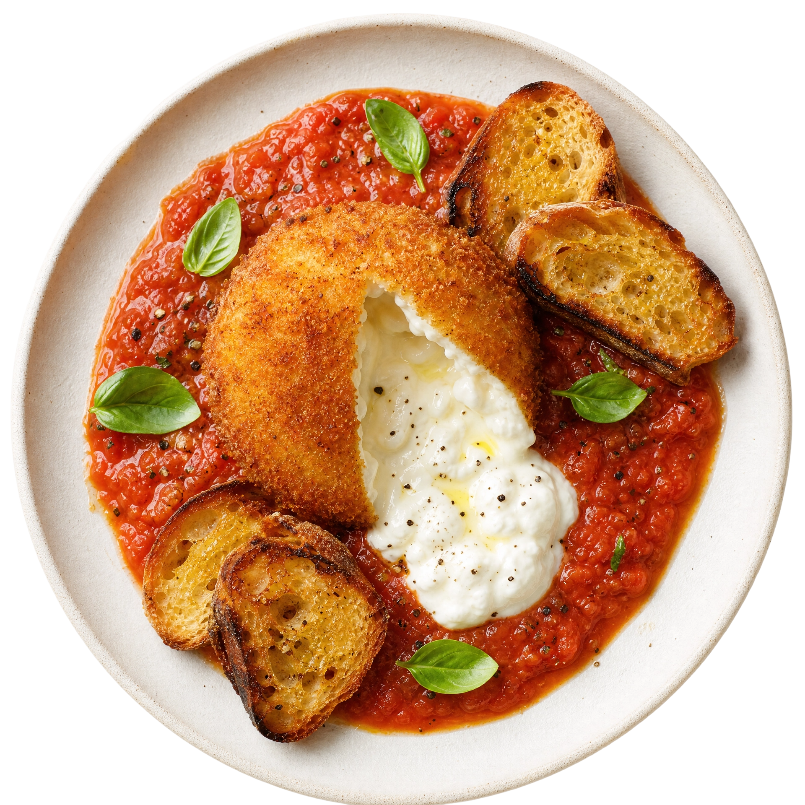

Todo alimento cria uma expectativa antes da primeira mordida
Preço, nome, foto, embalagem e apresentação criam expectativas sobre a comida. A experiência do cliente depende se esses sinais cumprem o que prometem.

Em uma clássica pesquisa do Caltech (California Institute of Technology) e da Stanford Graduate School of Business, realizada em 2008 nos Estados Unidos, pesquisadores fizeram 20 voluntários provarem vinhos em um laboratório de neuroimagem enquanto sua atividade cerebral era monitorada por ressonância magnética.
Só dois vinhos entraram no teste de preço. O primeiro custava de verdade US$ 5: numa prova apareceu com esse preço real; na outra, com uma etiqueta falsa de US$ 45. O segundo custava de verdade US$ 90: numa prova apareceu com o preço real; na outra, com uma etiqueta falsa de US$ 10. Os participantes não sabiam que havia repetição, nem que um dos preços era inventado.
Quando viam o preço maior, relatavam mais prazer ao beber. O exame também registrava mais atividade numa área do cérebro ligada à sensação de prazer: o córtex orbitofrontal medial.
O que aconteceu no experimento:
- 20 pessoas participaram da degustação.
- Havia três vinhos, mas os participantes acreditavam que eram cinco.
- Dois vinhos foram repetidos com preços diferentes.
- Os preços mais altos aumentaram o prazer relatado.
- Sem a informação de preço, as diferenças de preferência desapareceram.
O estudo demonstrou que o preço muda a experiência de consumo.
Uma pesquisa bem maior, publicada 15 anos depois, mostrou onde esse efeito encontra seu limite.
Em 2023, pesquisadores da Universidade de Maastricht, na Holanda, reuniram 2.842 participantes em seis estudos.
Os voluntários receberam informações de preço antes de entrar em contato com produtos como música, arte e chocolate.
Preços maiores criaram expectativas maiores de qualidade. As pessoas também esperavam gostar mais dos produtos caros.
Depois que conheciam o produto, porém, o preço deixava de produzir um resultado consistente. Os participantes nem sempre avaliavam o item mais caro como melhor ou mais agradável.
A conclusão dos pesquisadores:
O preço funciona como pista de qualidade antes da experiência, mas seu efeito sobre a satisfação posterior é frágil.
O cliente pode olhar para uma marmita de R$ 35 e esperar ingredientes melhores, porção bem montada e embalagem segura.
O mesmo vale para quem compra um salgado embalado na barraca do ambulante ou no balcão do minimercado de bairro: o preço mais alto também levanta a régua de exigência ali.
Quando abre o pedido, o cliente começa a conferir essa promessa.
Se a carne está ressecada, a comida chegou revirada ou a quantidade parece menor que a foto, o preço alto pesa contra o produto. O mesmo preço que levantou a expectativa aumenta o tamanho da frustração quando a entrega não confirma o que o consumidor esperava.

O preço é apenas uma parte (muito importante) dos sinais que o consumidor recebe
O cliente quase nunca tem acesso antecipado à cozinha, aos ingredientes ou ao cuidado usado no preparo. Para escolher, ele procura outros sinais, como:
- O nome do prato indica o que virá.
- A foto antecipa tamanho, textura e quantidade de recheio.
- A embalagem sugere como o pedido vai ser entregue, ou consumido.
O preço ajuda a formar uma ideia de qualidade, mas cada sinal soma uma parte da promessa.
Nome e descritivo
O nome de um produto faz mais do que identificá-lo.
Pesquisadores de Stanford testaram essa ideia em restaurantes universitários. Os mesmos vegetais receberam descrições básicas, voltadas à saúde ou concentradas no sabor.
Em um estudo posterior, realizado em cinco universidades norte-americanas e com mais de 137 mil decisões de consumo registradas, descrições voltadas ao sabor aumentaram em 29% a escolha dos vegetais em comparação com descrições ligadas à saúde.
Nomes como "cenoura cítrica glaceada" e "milho assado na manteiga" destacavam características que a receita realmente entregava. O efeito foi maior nos locais que serviam preparos considerados mais saborosos: a descrição ajudava quando havia uma boa experiência para sustentar as palavras.
Foto
Uma fotografia bem feita aumenta a vontade de experimentar. Também estabelece um padrão para a comparação que vem depois.
Se a imagem mostra oito salgados, o cliente espera oito salgados. Se o hambúrguer aparece com duas camadas de queijo, o pedido precisa chegar assim.
O cuidado vale para o enquadramento. Uma foto muito aproximada pode fazer uma porção parecer maior. Um ângulo escolhido para esconder pouco recheio resolve a venda na tela, mas pode criar um problema quando a embalagem é aberta.
ATENÇÃO ESPECIAL para o uso de IA nas suas fotos. Veja aqui uma matéria especial sobe boas práticas!
Embalagem
Embalagem tem muitas funções e, consequentemente, comunica muitas coisas.
Uma caixa bem fechada, sem manchas de gordura, com a marca visível, já sugere cuidado. O mesmo vale para o saquinho de papel do salgado, o pote da marmita ou o plástico do doce na prateleira do minimercado.
Essa mensagem muda conforme o cuidado com a apresentação por quem entrega ou revende. Uma bandeja organizada, com etiqueta legível e proteção contra poeira, sustenta o preço cobrado. Uma embalagem amassada, exposta ao sol ou empilhada sem cuidado, derruba a expectativa antes da venda.
A embalagem também participa do consumo, não só da entrega. Um pote que vaza, um saco que rasga, uma tampa difícil de abrir quando deveria ser simples: tudo isso entra na conta da experiência, mesmo quando a comida está perfeita.
Antes de aprovar uma embalagem nova, vale testar três momentos: como ela aparece na vitrine ou na prateleira, como resiste ao transporte até o cliente e como se comporta na mão de quem vai comer.
Faça o teste da promessa
O cliente vê
preço, nome, foto, avaliação e embalagem.
O cliente imagina
sabor, quantidade, qualidade e cuidado.
O cliente recebe
produto, atendimento e condições da entrega.
O cliente compara
o que esperava com o que encontrou.
O cliente decide
recomendar, comprar de novo ou procurar outra opção.